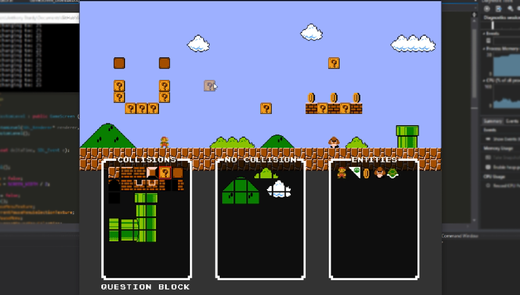
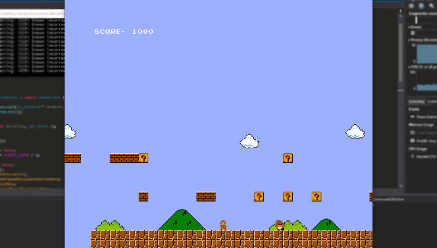
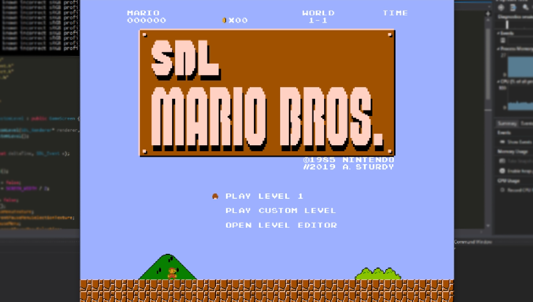

|    |
SummaryThis project is a remake of Super Mario Bros. using SDL and C++, with an in-game map editor. It was made for my Game Engine Creation module at Staffordshire University (Year 1, Semester 2). For the assignment, we were tasked to remake the original 1983 Mario Bros. game, then expand upon it. To expand the game, I added side-scrolling, more enemies, a level editor, updated collision system, etc. The biggest challenge while developing the game, was perfecting the collision system. It took a lot of testing and tweaking so the character wouldn't get stuck in the ground or go through any walls. Features
What I learnedThis game taught me about using unfamiliar frameworks (SDL) and taught me about general game mechanics, such as collision detection, creating a character controller that feels good to use, and saving/loading data to a file. It also helped me improve my C++ and general programming skills. |